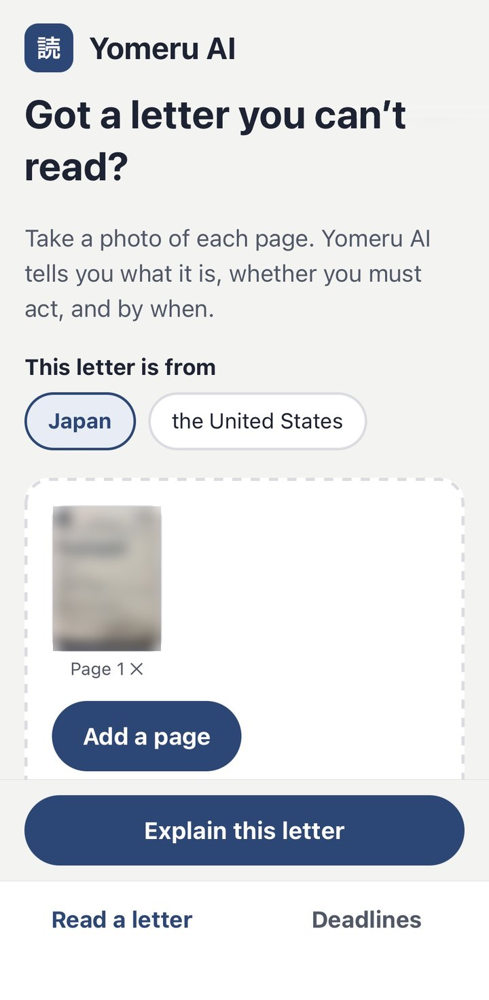
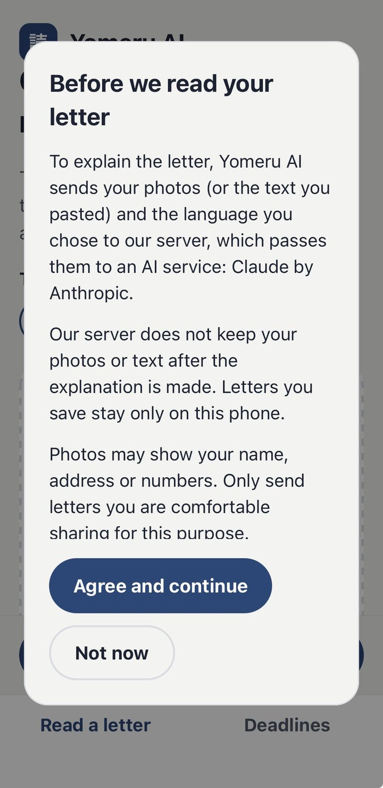
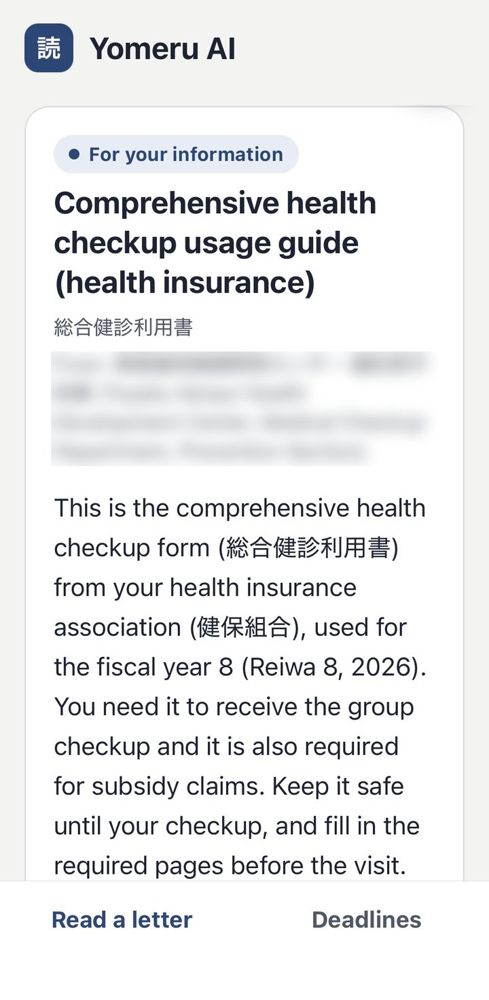
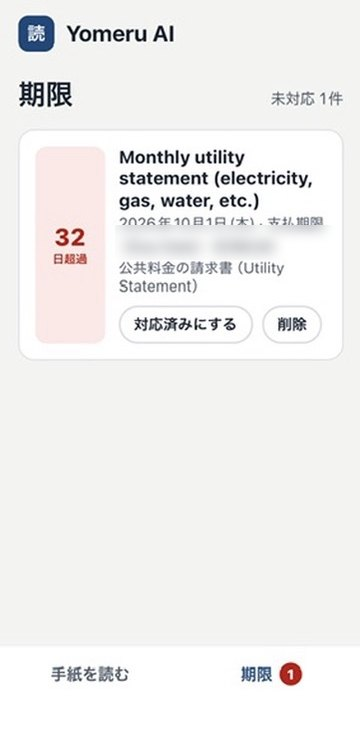

Yomeru AI
「この手紙、何が書いてあるの？」「何かしないといけないの？」——役所や会社から届く書類は、慣れない言葉で書かれていて不安になりがちです。Yomeru AI は撮影するだけで、内容とやるべきことをわかりやすく伝えます。
"What does this letter say? Do I need to do something?" Official mail is full of unfamiliar wording. With Yomeru AI, just take a photo and get a clear explanation of what it says and what to do.
開発中の画面
Screens in development




※開発中の画面です。公開時には変わることがあります。個人の情報はぼかしています。
Screens are from a development build and may change before launch. Personal details are blurred.
使い方は3ステップ
Three simple steps
- 1
手紙を撮る
Snap the letter
手紙を平らに置いて、1ページずつ撮影します（4ページまで）。写真を選んだり、文字を貼り付けたりもできます。
Lay the letter flat and take one photo per page (up to 4). You can also choose photos or paste the text.
- 2
説明の言語を選ぶ
Pick your language
日本語、やさしい にほんご、英語、中国語、ベトナム語など12の言語から選べます。
Choose from 12 languages, including Japanese, easy Japanese, English, Chinese and Vietnamese.
- 3
やることと期限を確認
See what to do and by when
何の手紙か、対応が必要か、いつまでかを説明します。期限のある手紙は「期限」に追加できます。
Get what the letter is, whether you must act, and by when. Letters with a due date can be added to Deadlines.
主な機能
Key features
やさしい言葉で解説
Plain-language explanations
専門用語や堅い言い回しを、わかりやすい言葉で説明します。手紙に出てくる大事な言葉の意味も一覧にします。
Jargon and formal wording are explained in simple words, with a list of the key terms on the letter.
急ぎかどうかが一目でわかる
Urgency at a glance
「すぐに対応」「対応が必要」「お知らせ」「捨ててよい」の4段階で表示します。
Each letter is marked Act now, Action needed, For your information or Safe to throw away.
やることを順番に
Clear next steps
支払い・期限・提出物など、次にすべきことを順番に整理します。金額や支払い方法も確認できます。
Payments, deadlines and paperwork become step-by-step actions, with the amount and how to pay.
期限の通知
Deadline reminders
保存した手紙は期限の近い順に並び、期限の1週間前と前日に通知でお知らせします。
Saved letters are sorted by due date, with reminders a week before and the day before.
詐欺の注意
Scam warnings
詐欺の疑いがある手紙には、赤い警告を表示します。
Letters that may be scams get a red warning.
大事な手紙は読み直し
Extra care for important mail
税金・保険・在留資格など大事な手紙や、読み取りに自信がない手紙は、より丁寧に読み直します。
Tax, insurance, residence-status and unclear letters are read again more carefully.
安心して使えるように
Built with privacy in mind
送る前に同意を確認
Consent before sending
写真を初めて送る前に、どこに送られるかを説明し、同意をいただきます。
Before your first photo is sent, the app explains where it goes and asks for your consent.
サーバーに保存しない
Not kept on our server
写真はAI（Anthropic社のClaude）に説明させるためだけに使い、当方のサーバーには保存しません。
Photos are used only to have the AI (Claude by Anthropic) explain them and are not kept on our server.
記録はスマホの中だけ
Records stay on your phone
保存した手紙や設定はスマホの中にだけ残ります。アカウント登録も広告もありません。
Saved letters and settings stay on your phone. No account and no ads.
こんな方におすすめ
Who it's for
- 日本で暮らしていて、日本語の書類を読むのに苦労している外国人の方Foreign residents in Japan who struggle with Japanese paperwork
- アメリカで暮らしていて、役所や会社からの英語の郵便に戸惑う方People in the US who find official English mail confusing
- 家族に届いた書類の内容を確認してあげたい方Anyone helping family members understand their mail
よくある質問
FAQ
どんな書類に使えますか？What kinds of letters does it work with?
日本とアメリカで届く、役所・税金・保険・年金・公共料金・病院・会社からのお知らせなど、日常的な書類を想定しています。
Everyday mail in Japan and the US, such as notices about tax, insurance, pensions, utilities and hospitals, and letters from city offices and companies.
どの言語で説明してもらえますか？Which languages can it explain in?
12の言語に対応しています：日本語、やさしい にほんご、英語、中国語（簡体字）、ベトナム語、韓国語、タガログ語、ポルトガル語、ネパール語、インドネシア語、ミャンマー語、スペイン語。
12 languages: Japanese, easy Japanese, English, Chinese (Simplified), Vietnamese, Korean, Tagalog, Portuguese, Nepali, Indonesian, Burmese and Spanish.
写真はどこに送られますか？Where are my photos sent?
説明を作るために、当方のサーバーを通って Anthropic 社のAI（Claude）に送られます。サーバーには保存しません。詳しくはプライバシーポリシーをご覧ください。
To create the explanation, they pass through our server to Anthropic's AI (Claude). Our server does not keep them. See the Privacy Policy.
説明はいつも正しいですか？Are the explanations always right?
AIの説明には誤りがあることがあります。法律・税務・在留資格の助言ではないため、最終的な確認は必ず手紙に書かれた窓口（役所など）で行ってください。
AI explanations can contain mistakes. They are not legal, tax or immigration advice, so always confirm with the office named on the letter.
いつ使えるようになりますか？When will it be available?
現在、実機でテスト中です。まず iPhone 向けに公開予定で、公開時期はこのページと X（旧Twitter）でお知らせします。
We're testing on real devices now. It will launch on iPhone first; we'll announce the date on this page and on X.
公開のお知らせを受け取る
Get notified at launch
ご質問・ご要望もお気軽にお寄せください。
Questions and feedback are always welcome.
kkcompany.global@gmail.com